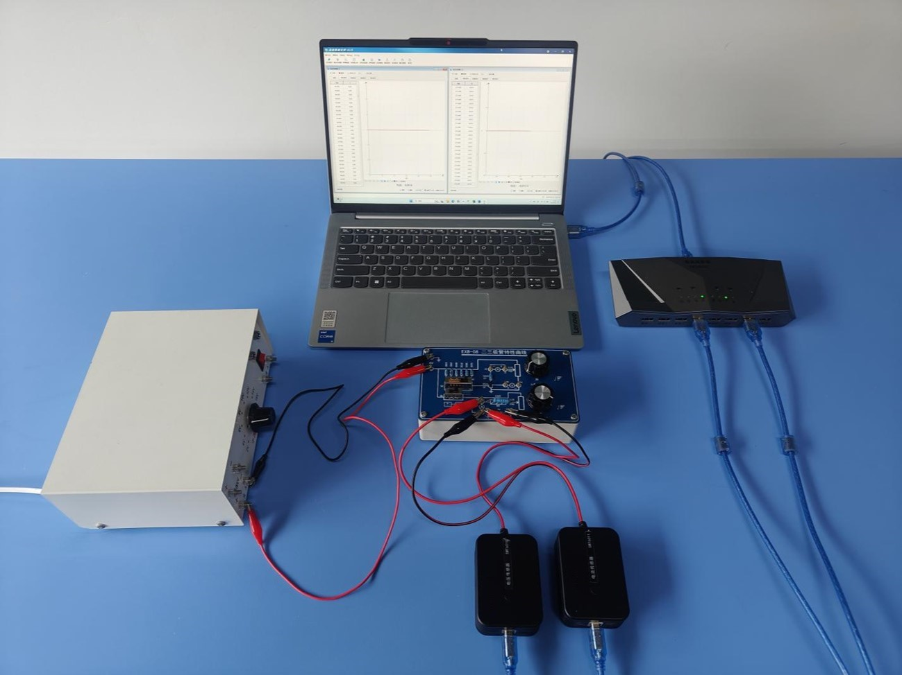
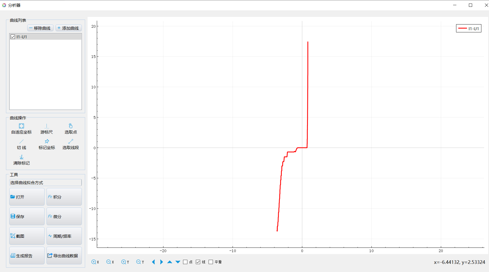

实验三十一 二极管特性曲线描绘
【实验目的】
探究二极管单向导电性。
【实验原理】
利用传感器测量二极管两端的电压和通过二极管的电流，做出反应两者关系的曲线，即得到二极管的伏安特性曲线。由于二极管反向接入电路时电路电流太小，利用电流传感器不方便测量，所以实验中利用电压传感器测出电阻R2两端的电压变化来替代电路的电流变化。
【实验器材】
数据采集器、电流传感器、二，三极管特性曲线实验板、计算机等。
【实验装置】

【实验操作步骤】
1.按照实验电路图将各元件接入实验电路板，在电路板电源接线柱上接入10V直流电源，然后将电压传感器接入数据采集器；
2.进入实验数据分析软件，打开表格视图，设置自动记录的频率为50Hz，将电路板电源开关K打至“＋”端，此时实验二极管正向接入电路。点击列表中的“采集”按钮，开始记录数据；
3.连续调节滑动变阻器触片位置，改变二极管两端的电压，记录足够的数据后点击“暂停”按钮，然后点击“数据分析”按钮，以电压二（二极管两端电压）为X轴，电压一（R2两端电压）为Y轴，做出二极管的正向伏安特性曲线；
4.将选择开关K打至“－”端，此时实验二极管反向接入电路，重复上述的实验步骤，即可做出二极管的负向特性曲线；
5.将两次做出的图像同时显示在分析器中，即得到二极管的伏安特性取向。

电流与电压的关系
【注意事项】
接入实验板的电源电压不能高于实验板规定的电压，否则容易损坏实验板和传感器。
【思考与讨论】
分析总结二极管的伏安特性曲线的特征。